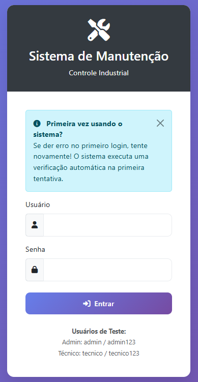
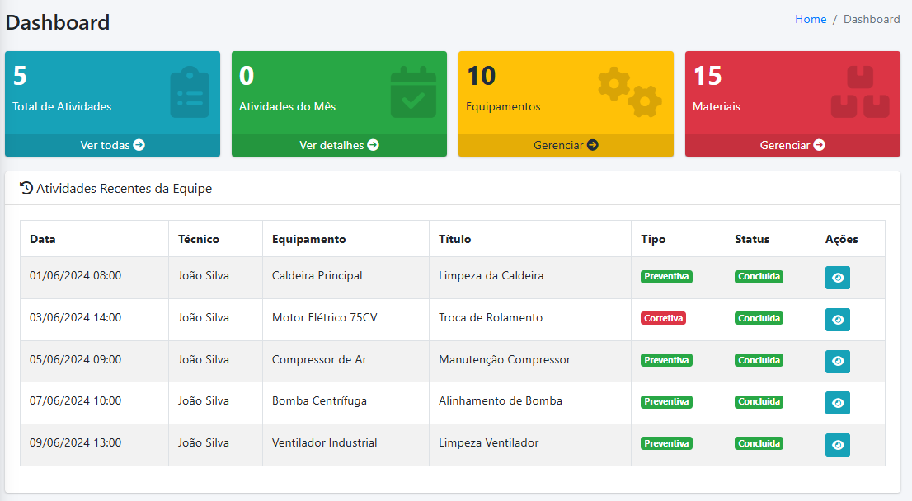
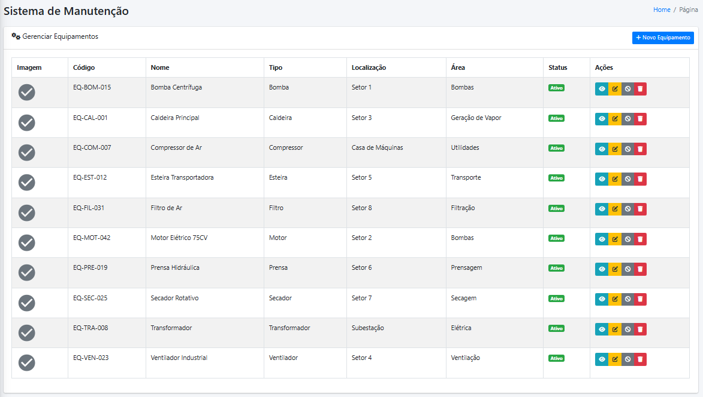
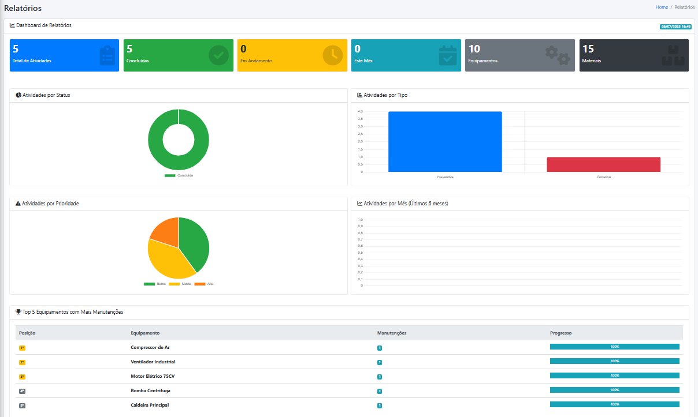
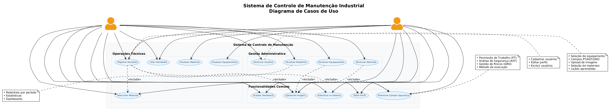
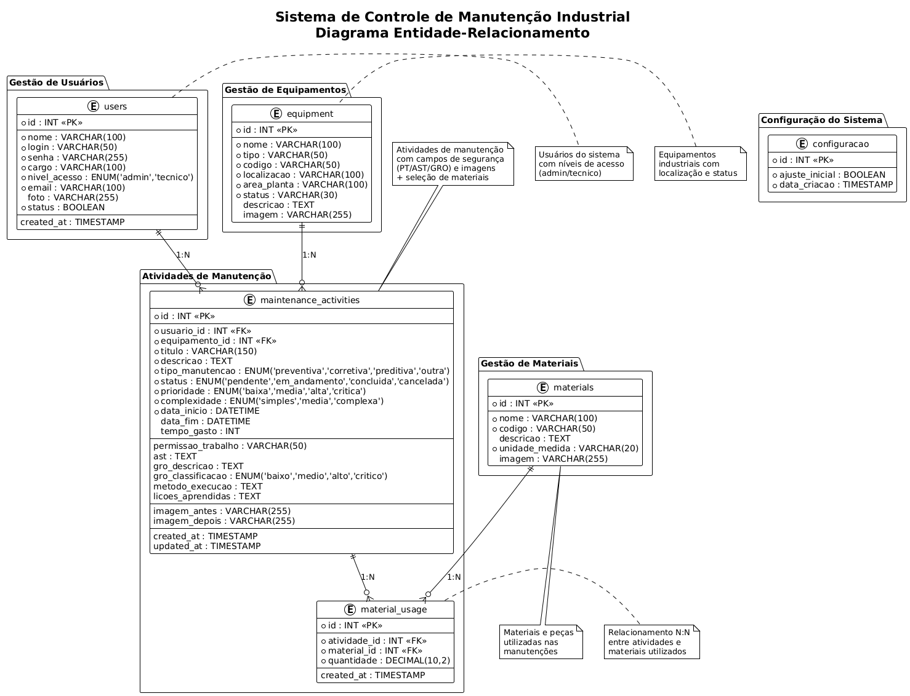

RELATÓRIO FINAL - PROGRAMAÇÃO WEB
IDENTIFICAÇÃO DO ESTUDANTE E DO SISTEMA
Estudante: Ericson Schmidt Bicalho
Número de Matrícula: 20241TBOR10010018
Título do Sistema: Sistema de Controle de Manutenção Industrial
Tema do Sistema: Sistema para controle de manutenção industrial com gestão de equipamentos, materiais e atividades de manutenção.
Personal Maintenance Control
Sistema de Controle de Manutenção Industrial
JUSTIFICATIVA E OBJETIVOS
O controle de manutenção industrial é fundamental para garantir a eficiência operacional, segurança e rastreabilidade das atividades em plantas industriais. Este sistema foi desenvolvido para atender às necessidades de técnicos e administradores que precisam documentar, organizar e consultar atividades de manutenção de forma sistematizada.
Principais funcionalidades:
- Gestão completa de usuários com níveis de acesso
- Cadastro e controle de equipamentos industriais
- Gestão de materiais
- Registro detalhado de atividades de manutenção
- Upload e armazenamento de imagens
- Relatórios e dashboards informativos
- Controle de segurança (PT, AST, GRO)
DESCRIÇÃO GERAL DAS FUNCIONALIDADES
INSERTS:
- Cadastro de usuários (nome, login, senha, cargo, nível de acesso, email, foto)
- Cadastro de equipamentos (nome, tipo, código, localização, área, descrição, imagem)
- Cadastro de materiais (nome, código, descrição, unidade de medida, imagem)
- Registro de atividades de manutenção (título, descrição, tipo, equipamento, técnico, datas, imagens)
- Registro de uso de materiais nas atividades
READS:
- Listagem de usuários com filtros por nível de acesso
- Consulta de equipamentos por tipo e localização
- Busca de materiais por código e descrição
- Visualização de atividades por período, técnico e equipamento
- Relatórios estatísticos e dashboards
- Perfil do usuário com estatísticas pessoais
UPDATES:
- Edição de dados de usuários
- Atualização de informações de equipamentos
- Modificação de dados de materiais
- Edição de atividades de manutenção
- Alteração de status de usuários e equipamentos
- Atualização de fotos de perfil
DELETES:
- Exclusão de usuários (com limpeza de atividades relacionadas)
- Remoção de equipamentos
- Exclusão de materiais
- Remoção de atividades de manutenção
- Exclusão de imagens antigas
NÍVEIS DE USUÁRIO:
| Nível | Permissões | Funcionalidades |
|---|---|---|
| Administrador | Acesso total ao sistema | Gestão de usuários, equipamentos, materiais, visualização de todas as atividades, relatórios completos |
| Técnico | Acesso limitado | Visualização de equipamentos e materiais, registro de atividades, edição de perfil |
LINK DO GITHUB:
PRINCIPAIS TELAS DO SISTEMA (PRINTS)
Tela 1: Tela de Login
📱 CAPTURA DE TELA - TELA DE LOGIN
Finalidade: Autenticação de usuários com validação de credenciais e verificação automática de problemas na primeira execução.
Funcionalidades: Login seguro, mensagem informativa para primeira execução, design responsivo.
Tela 2: Dashboard Principal
📊 CAPTURA DE TELA - DASHBOARD
Finalidade: Visão geral do sistema com estatísticas, cards informativos e menu de navegação principal.
Funcionalidades: Estatísticas de atividades, acesso rápido aos módulos, interface personalizada por nível de usuário.
Tela 3: Listagem de Equipamentos
⚙️ CAPTURA DE TELA - EQUIPAMENTOS
Finalidade: Visualização e gestão de equipamentos industriais com filtros e ações de CRUD.
Funcionalidades: Listagem paginada, busca por tipo/localização, ações de editar/excluir, upload de imagens.
Tela 4: Formulário de Atividade
🔧 CAPTURA DE TELA - ATIVIDADE

Finalidade: Registro detalhado de atividades de manutenção com campos de segurança e upload de imagens.
Funcionalidades: Seleção de equipamento, campos PT/AST/GRO, upload antes/depois, seleção de materiais.
Tela 5: Relatórios
📈 CAPTURA DE TELA - RELATÓRIOS
Finalidade: Geração de relatórios com gráficos e estatísticas das atividades de manutenção.
Funcionalidades: Filtros por período, gráficos interativos.
MODELAGEM DO SISTEMA
Diagrama Geral de Casos de Uso:
📋 DIAGRAMA DE CASOS DE USO
Ator Principal: Usuário (Admin/Técnico)
Casos de Uso Principais:
- Autenticar no Sistema
- Gerenciar Usuários (Admin)
- Gerenciar Equipamentos
- Gerenciar Materiais
- Registrar Atividade
- Visualizar Relatórios
- Editar Perfil
Diagrama Entidade-Relacionamento:
🗄️ DIAGRAMA E-R
Entidades Principais:
- users (id, nome, login, senha, cargo, nivel_acesso, email, foto, status)
- equipment (id, nome, tipo, codigo, localizacao, area_planta, status, descricao, imagem)
- materials (id, nome, codigo, descricao, unidade_medida, imagem)
- maintenance_activities (id, usuario_id, equipamento_id, titulo, descricao, tipo_manutencao, status, datas, imagens)
- material_usage (id, atividade_id, material_id, quantidade)
- configuracao (id, ajuste_inicial, data_criacao)
Relacionamentos: users 1:N maintenance_activities, equipment 1:N maintenance_activities, maintenance_activities N:N materials (via material_usage)
RELATO DO USO DA INTELIGÊNCIA ARTIFICIAL
Utilização da IA durante o desenvolvimento:
- Utilizei IA em todas as etapas deste projeto, tanto na elaboração do esboço do sistema, quanto em todo o desenvolvimento do mesmo.
Recursos externos consultados:
- Documentação oficial do PHP e PDO
- Tutoriais do Bootstrap para interface responsiva
- Exemplos de código em repositórios GitHub
CONSIDERAÇÕES FINAIS SOBRE O PROCESSO
Quais foram as maiores dificuldades técnicas e como foram superadas?
- Verificação automática: Implementar a verificação automática na primeira execução foi desafiador. Resolvi criando uma tabela de configuração e lógica condicional no login.
- Interface responsiva: Adaptar a interface para diferentes dispositivos exigiu conhecimento de CSS e Bootstrap. Estudei e apliquei classes responsivas.
Quais foram os aprendizados mais importantes com o projeto?
- Fluxo completo de desenvolvimento: Compreendi melhor o processo desde a análise de requisitos até a implementação.
- Arquitetura de banco de dados: Aprendi a importância de uma boa modelagem e relacionamentos entre tabelas.
- Segurança em aplicações web: Entendi a importância de validação de dados, criptografia de senhas e proteção contra ataques.
- Gerenciamento de sessões: Compreendi como implementar controle de acesso e autenticação de usuários.
- Upload de arquivos: Aprendi as melhores práticas para upload seguro de imagens com validação.
Como o acompanhamento nas segundas-feiras ou o uso de IA/recursos externos ajudou?
- Acompanhamento: As orientações nas segundas-feiras foram fundamentais para direcionar o desenvolvimento.
- IA como ferramenta: A inteligência artificial acelerou o desenvolvimento fornecendo soluções rápidas e exemplos de código.
O que você faria diferente numa próxima vez?
- Planejamento mais detalhado: Investiria mais tempo no planejamento inicial e na modelagem do banco de dados.
- Versionamento: Faria commits mais frequentes e organizados no Git.
Quais as suas impressões gerais sobre a experiência de desenvolver um sistema completo?
A experiência foi extremamente enriquecedora e proporcionou uma visão real do desenvolvimento de software. Pude aplicar conhecimentos teóricos em um projeto prático e compreender a complexidade de criar um sistema funcional. O projeto demonstrou a importância de planejamento, organização e atenção aos detalhes. A satisfação de ver o sistema funcionando e atendendo aos requisitos foi muito gratificante.
Quais sugestões para continuidade do seu sistema em projetos futuros?
- API REST: Desenvolver uma API para integração com aplicações mobile.
- Notificações: Implementar sistema de notificações em tempo real.
- Análise preditiva: Adicionar funcionalidades de análise preditiva de manutenção.
- Integração IoT: Conectar com sensores e equipamentos inteligentes.
- Relatórios avançados: Implementar relatórios mais sofisticados com gráficos interativos.
- Backup automático: Sistema de backup e recuperação de dados.
- Auditoria: Logs detalhados de todas as operações do sistema.
- Dados: Implementaria a possibilidade de exportar os dados do sistema para um arquivo CSV ou Excel.
🎯 MVP CONCLUÍDO COM SUCESSO! ✌️
🚀🚀🚀